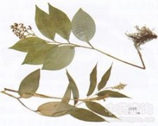

鹿药

拼音
Lù Yào
别名
偏头七、山糜子、磨盘七、盘龙七、螃蟹七、土飞七、小鹿药
来源
百合科鹿药属植物鹿药Smilacina japonica A. Gray，以根状茎和根入药。秋季采挖，洗净晒干。
生境分布
生于林下及山坡阴处。分布我国西南、西北、东北和华北等地。
药材特点
多年生草本，高达40厘米。根茎横卧，肉质肥厚，有多数须根。茎单生，直立，有粗毛，下部有鳞片。叶互生，着生于茎的上半部，通常5～7（9）片，卵状椭圆形或广椭圆形，长8～16厘米，宽6～7厘米，先端尖，基部圆形，边缘及两面密被粗毛；具短柄。圆锥花序顶生；花小，白色；花被片6，椭圆形；雄蕊6；子房3室，每室有胚珠1颗。浆果球形。初绿色，有紫斑，成熟时黄色或淡黄色。花期夏季。
性状
性状鉴别 干燥根茎略呈结节状，稍扁，长6-15cm，直径0.5-1cm。表面棕色至棕褐色，具皱纹，先端有一至数个茎基或芽基，周围密生多数须根。质较硬，断面白色，粉性。气微，味甜、微辛。以根茎粗壮、断面白色、粉性足者为佳。
性味
甘、苦，温。
功能主治
祛风止痛，活血消肿。用于风湿骨痛，神经性头痛；外用治乳腺炎，痈疖肿毒，跌打损伤。
用法用量
2～3钱，外用适量捣烂敷患处。
化学成分
鹿药含异鼠李素-3-O-半乳糖甙（isorhamnetin-3-O-galactoside）。
药理作用
1：无药理作用数据
摘录
《全国中草药汇编》